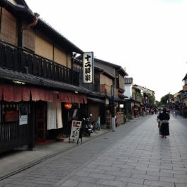

Ore noFlexible CSSGrid System.
俺流のフレキシブルCSSグリッドシステム
「Olex」のデモページ。
「Olex」はFlexboxを利用した
単なるグリッドシステムなので、
気になった方は、解説ページを参考に自分で作ってもらえたらと思います。


Overview
12カラムを基準として必要なカラム数を指定するグリッドシステム。
間隔を開けるも閉じるも、その大きさも選択できる。
位置揃えや順番の入れ替えも可能。後は自分でカスタマイズして下さい。
Feature
Flexboxを利用したグリッドシステムで、単なる横並びや12カラムをベースとしたグリッドレイアウトも可能です。グリッド間のスペースにはborderを利用していて間隔の調整が容易にできます。もちろんこのページのレイアウトは「Olex.css」を使っているので、詳しくはデベロッパーツールで。
 Grid
Grid- 12カラムを基準としたグリッドシステム。
 Alignment
Alignment- 各アイテムの位置を揃えることもできる。
 Direction
Direction- アイテムの並び順を逆順に変更できる。
Grid
スマホは2列PCは4列なども属性値の付け替えでOK。
間隔を開けるも閉じるも、属性で調整。
間隔の大きさも拡張可能。
Flexible
スマホ、タブレット、PCで異なるカラムのレイアウトも容易に対応できます。 12カラムをベースとして、必要なカラム数をカスタムデータ属性で指定するだけでレイアウトが可能。
-

-

-

-

-

-

-

-
 -

-

-

-

-

Gutter
各アイテム間のスペースもカスタムデータ属性を指定するだけで、スペースの有無はもちろん、その大きさも選択できます。また、このスペースには border プロパティを使っているので、スペースのサイズを拡張するのも容易です。


Alignment
水平方向の位置揃えや垂直方向の位置揃えもできます。
左のカラムに大きな写真、右のカラムにはテキストを天地中央に配置なんてことも可能です。
-
Left -
Center -

Right -

Top -

Middle -

Bottom
Direction
カラムの並び順も変更可能。
カスタマイズ次第では、個別に順番を入れ替えることだってできる。
Normal
- 1
- 2
- 3
- 4
- 5
- 6
- 7
- 8
- 9
- 10
- 11
- 12
- 13
- 14
- 15
- 16
- 17
- 18
- 19
- 20
- 21
- 22
- 23
- 24
Reverse
- 1
- 2
- 3
- 4
- 5
- 6
- 7
- 8
- 9
- 10
- 11
- 12
- 13
- 14
- 15
- 16
- 17
- 18
- 19
- 20
- 21
- 22
- 23
- 24


さぁ、あなたも自分のCSSグリッドシステムを作ろう。